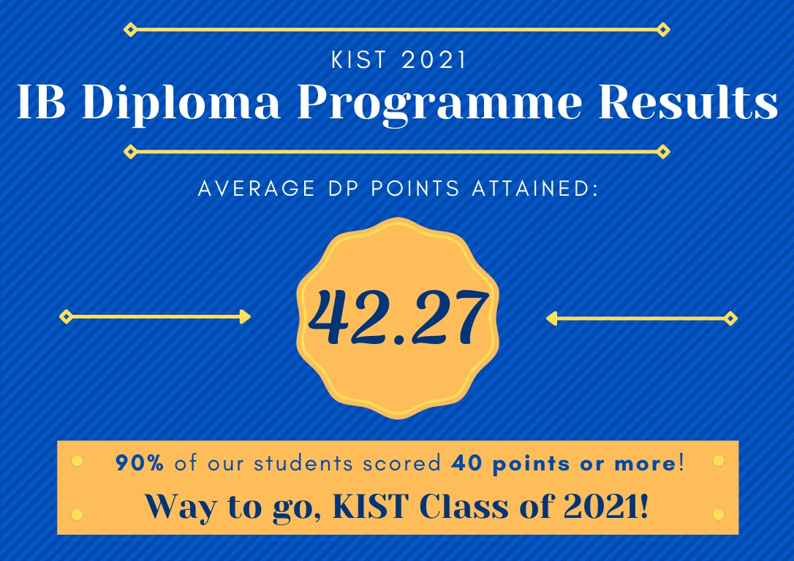

With regards to our curricular programming, upon evaluating various curriculams from around the world, KIST chose to adopt the world-renowned International Baccalaureate’s Primary Years Programme (K1 to Grade 5), Middle Years Programme (Grades 6 to 10) and Diploma Programme (Grades 11 and 12) as the most appropriate curriculum frameworks for our school. The school provides a safe and a fun area for children. In the school they have a library in each building, a field to play in recess, afterschool activities, and japanese classes.
K.International.School has achieved to become the top 10 schools in the world. The average increases every year. Every year there will be a test to promote or push down a student into a standard level or into an extended level. Extended level is the hightest level and standard is the lowest level. The diagnostic test's average was 42.27 out of 45! This demonstrates that K.International.School is a knowledgable school appropriate for learning.
For Grade 6 we made a course called the extended foundation coarse where children learn more about math and changes the kids future in grade 7.
In the past, international schools in Japan catered mainly to non-Japanese children and returnees, and charged high tuition fees since many were ineligible to secure government funding to operate. Only children from financially privileged families with a high social status were able to receive an international education. With the aim of improving this situation in order to provide children with an opportunity to receive a high quality international education and to nurture competent individuals able to contribute to our future global society, I founded K. International School Tokyo (KIST) with my wife in 1997.
1-5-15 Shirakawa, Koto-ku, Tokyo, Japan 135-0021
English:03-3642-9993
japanese:03-3642-9992
English:+81-3-3642-9993
japanese:+81-3-3642-9992
info@kist.ed.jp